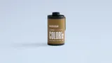
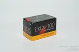
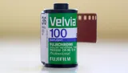
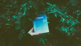
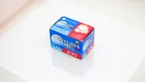
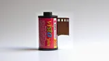

Lab Archive, Vol. I · 23 free filters for the CampSnap Pro
Turn your CampSnap Pro into a time machine.
Twenty-three looks drawn from the film that filled shoeboxes and photo albums: Kodak Gold's family-album warmth, Velvia's loud skies, the green cast of a drugstore print, Ilford's quiet black and white. Copy one to your card, and every shot comes back like it's been to the lab.
A catalogue of analogue behaviour for digital tools.
Download

How it works
- Pick a look.
- Tap a slot to download it, already named.
- Copy it to the root of the camera's memory card.
- Turn the dial to that slot and shoot.
Any filter works in any slot: a colour look in the B&W slot is fine, and the other way round.
- STD
std.flt - VTG1
vtg1.flt - VTG2
vtg2.flt - B&W
bw.flt

01. Golden '92
Indexnostalgic · moderate · orange-yellow warmth
Lomochrome Color '92

Lomochrome Color '92 is a contemporary emulsion formulated as a homage to late century consumer color film, designed by Lomography to revive the tonal eccentricities of 90s chemistry.
Released in small runs and processed through standard C-41 chemistry.
The film's grain structure is relatively fine for its class but intentionally inconsistent, yielding subtle variation frame to frame, an aesthetic echo of supermarket minilabs and home processing kits.
- Open daylight
- Family & everyday
- Late-summer trips
- Warm interiors
Use it outdoors for family moments and everyday life, with a golden, nostalgic glow. Best where memory matters more than accuracy.
Read the notes
An archival interpretation of Lomochrome Color '92, the late century experiment in altered spectral response.
The emulsion's warm-channel priority produced golden midtones and subdued blues, a palette that defined low cost minilab prints through the early 90s.
In this translation, contrast is moderated and the white point allowed to breathe, yielding soft amber density without loss of structure.
Why it matters: this look recreates the approachable warmth of consumer color in its final analog decade sentimental, inexpensive, and chemically earnest. The gold cast arrives not from grading but from the dye hierarchy itself, where yellow overtook cyan in both time and chemistry.
When to use: open daylight, late summer travel, interior tungsten. It excels where memory, not measurement, is the brief.
Finishing: fine grain simulation restores the tactile softness of 200 speed negative; gentle halation completes the nostalgic bloom.
File names
The camera only reads std.flt, vtg1.flt, vtg2.flt and bw.flt, so rename a file saved under its own name to one of those on the card.
Saved as std (1).flt? Your browser kept the old file and numbered the new one. Rename it before copying it over, or the camera won't find it.

02. Eternal Hour
Indexwarm · soft · golden
Kodak Gold 200
Mass market consumer color negative introduced in 86 and produced for decades.
Defined a household aesthetic: amber warmth, approachable contrast, and generous tolerance for everyday use.
Used primarily for family albums, school events, and travel anywhere a compact camera lived.
Gold's signature is friendly skin, yellow green inclination in mixed light, and an overall softness that reads as memory rather than measurement.
- Daylight walks
- Open shade
- Window light
- Family & travel
A calm, warm baseline for everyday pictures. Keep the frame simple and let the amber carry the mood.
Read the notes
A measured warm bias designed to simulate the familiar envelope of late day sun without theatrical overreach.
Midtones acquire a gentle amber lift, shadows retain structure so that form remains legible, and highlights roll to a soft shoulder rather than flaring.
The cumulative impression is everyday scenes rendered as memory rather than as a light meter report.
Unlike aggressive warmth treatments, this variant protects sky discipline and avoids orange skin.
Why it matters: everyday pictures deserve coherence. This look serves as a dependable baseline for family work, travel notes, or portraits where warmth should be felt, not announced. It reproduces the calm density many prints carried when they were well exposed and gently processed at the lab, granting a sense of continuity across frames and sessions.
When to use: daylight, open shade, and interiors with window light. It tolerates a stop of overexposure for an airier rendering without breaking apart.
Keep compositions simple; let amber mids carry the mood while edges remain crisp.
Finishing: add a small grain layer if desired, and a very light halation on speculars. A subtle vignette can focus the field on faces, but avoid heavy cornering The strength of this profile is its natural, evenly lit read.
File names
The camera only reads std.flt, vtg1.flt, vtg2.flt and bw.flt, so rename a file saved under its own name to one of those on the card.
Saved as std (1).flt? Your browser kept the old file and numbered the new one. Rename it before copying it over, or the camera won't find it.

03. Street Cool
Indexcool · medium · blue-magenta
Fuji Superia X-TRA 400
High volume consumer color negative introduced in the 90s, widely distributed worldwide.
Built for robustness, reliable speed, active grain management, and strong dye stability for casual use.
Signature traits include decisive reds, disciplined greens, and a slightly cool shadow bias. Common subjects: travel, street, family prints.
Superia X-TRA 400 established the modern snapshot palette; assertive but readable, with enough contrast to hold form in daylight and neon alike.
- City streets
- Overcast afternoons
- Blue hour
- Mixed light
Made for steel, concrete and glass. It keeps colour honest and shadows cool, even under sodium and LED together.
Read the notes
A city first palette that brings order to steel, concrete, and glass.
Shadows lean cool to preserve separation in dense structure while mids remain clean so skin and signage remain intelligible. Reds are tamed to avoid advertising glare, cyans and magentas are given quiet presence. The contrast profile is deliberate: enough bite to define edges, restrained enough to keep night detail from collapsing.
Why it matters: urban subjects punish imprecision. This look reads as contemporary without abandoning the film lineage controlled color, breathable mids, and measured blacks. It is an excellent default for reportage where you want factual color with a slight nocturnal poise.
When to use: city canyons, overcast afternoons, transit hubs, and blue hour. It handles mixed light gracefully, especially sodium and LED together, keeping the palette legible.
Finishing: add fine grain if you want a newsprint edge. Subtle clarity or micro contrast can emphasize architectural lines, avoid heavy sharpening on faces.
File names
The camera only reads std.flt, vtg1.flt, vtg2.flt and bw.flt, so rename a file saved under its own name to one of those on the card.
Saved as std (1).flt? Your browser kept the old file and numbered the new one. Rename it before copying it over, or the camera won't find it.

04. Deep Separation
Indexcinematic · extreme · green-red
Fuji Pro 400H
Professional C-41 color negative, introduced as part of Fujifilm's portrait line and discontinued in 2021.
Known for pastel restraint, finely managed grain for ISO 400, and a clean cyan green bias that kept skies calm and foliage orderly.
Adopted by wedding and portrait studios for reliable skin tone reproduction, open shadows, and generous latitude in mixed daylight. When printed conservatively, the look reads neutral with a breathable midtone; when overexposed by a stop, it assumes the airy, high key character associated with editorial portraiture in the 00s.
- Staged portraits
- Backlit scenes
- Leafy backgrounds
For portraits where the person has to stand out. The world around them goes deep and dark while faces stay calm.
Read the notes
A separation study for portraits where subject precedence is non-negotiable.
Background hues, particularly greens and reds, are driven into denser registers while faces keep a quiet luminance, producing a theatrical depth without cartoon saturation. Contrast is assertive but centered in the lower mids so that skin retains volume.
The effect resembles careful gel work or layered printing: the world deepens, the person holds.
Why it matters: not every portrait needs mercy. Some require intent and gravity. This profile creates space around the subject without resorting to blur or heavy vignetting, giving you editorial presence straight out of camera.
When to use: staged portraits, backlit environments, foliage backgrounds, rim-lit dusk. It is unsuited to delicate pastel scenes; deploy when you want command, not whisper.
Finishing: minimal. If required, a restrained bloom on highlights can polish the theatrical cue. Keep grain fine so the separation remains the story.
File names
The camera only reads std.flt, vtg1.flt, vtg2.flt and bw.flt, so rename a file saved under its own name to one of those on the card.
Saved as std (1).flt? Your browser kept the old file and numbered the new one. Rename it before copying it over, or the camera won't find it.

05. Vivid Landscape
Indexvibrant · strong · red-green
Kodak Ektar 100

Professional C-41 negative launched in 08, positioned as ultra-fine grain with bold color.
A favourite for landscape, product, and travel work where saturation and edge clarity are desirable. Reds assert, blues hold depth, and greens remain vivid without collapsing into a single register.
Less forgiving for skin under mixed light, but exceptionally capable in controlled conditions and open daylight.
- Open daylight
- After the storm
- Coast at midday
- Mountain shade
Loud, firm colour for big views. Save it for places where the land and the weather are the subject, not people.
Read the notes
A saturated, high structure palette for terrain and weather.
Greens and blues step forward, reds retain a dignified weight in rock and foliage. The contrast curve is firm with a disciplined midtone to maintain separation across distance. Skies carry color and depth without bleeding into the horizon, water holds detail in ripples and shadowed coves.
Why it matters: landscapes often demand assertive color to match memory and effort. This treatment celebrates saturation without dissolving into posterization, staying printable across papers and sizes.
When to use: open daylight, post storm clarity, alpine shade, coastlines at midday. It is less forgiving for portraits; reserve it for places where geology and weather are the subject.
Finishing: subtle clarity and a touch of grain can introduce scale. Keep halation minimal unless you want intentional glow at the sun edge.
File names
The camera only reads std.flt, vtg1.flt, vtg2.flt and bw.flt, so rename a file saved under its own name to one of those on the card.
Saved as std (1).flt? Your browser kept the old file and numbered the new one. Rename it before copying it over, or the camera won't find it.

06. Crimson Dusk
Indexmoody · strong · red
Fuji Velvia 100

E-6 transparency stock introduced in the mid 00s as a modern counterpart to the original Velvia.
Revered for saturation and micro contrast with unusually fine grain for slide. Landscape specialists leaned on Velvia for deep skies, assertive greens, and the peculiar way reds deepen without losing edge. Reciprocity behaviour and dye stability improved over earlier variants, allowing long exposures and archival prints with fewer compromises.
Used with care, it is dramatic without chaos; used casually, it dominates the scene.
- Blue hour
- City signs
- Autumn leaves
- Tungsten accents
Pulls the reds deep and keeps the shadows from choking. Best when scarlet is the story. Skip it for close portraits.
Read the notes
A controlled red emphasis that deepens through the spectrum toward crimson while protecting orange from flattening.
Shadows adopt a faint cyan countercast that prevents the frame from choking, keeping night and late day scenes legible. The mood is deliberate; autumn canopies, neon reflections, and sun rims take on a theatrical density without turning lurid.
Why it matters: red is notoriously hard to manage. This profile offers a usable, printable red that carries emotion and edge. It is a specialty tool for when scarlet detail is the story.
When to use: blue hour, city signage, late sun through leaves, interiors with tungsten accents. Avoid close portraits unless a red bias is intended.
Finishing: mild bloom on highlights completes the cinematic read, hold back on global saturation to keep the discipline intact.
File names
The camera only reads std.flt, vtg1.flt, vtg2.flt and bw.flt, so rename a file saved under its own name to one of those on the card.
Saved as std (1).flt? Your browser kept the old file and numbered the new one. Rename it before copying it over, or the camera won't find it.

07. Neutral Transparency
Indexaccurate · medium · slight cyan-green
Fuji Provia 100F
Professional E-6 transparency film launched as a refinement of the Provia line.
Defined by fine grain, high acutance, and an honest palette with a measured coolness: skies remain disciplined, foliage separates cleanly, and neutrals retain structure.
Used by editorial and commercial practitioners requiring dependable color under controlled light.
Its slide character is less theatrical than Velvia, more surgical than consumer color negative, and ideal where precision and repeatability outrank spectacle.
- Controlled daylight
- Travel notes
- Product shots
A clean, honest slide look for when accuracy matters. Frames sit together well, and small edits land precisely.
Read the notes
A slide like neutrality with a measured cyan green inclination.
The aim is clarity: skies that do not blare, foliage that keeps its structure, and neutrals that print cleanly without corrective gymnastics. Micro contrast is modest to preserve edge fidelity, color is present but not performative.
It is the look you want when accuracy is the brief and consistency is the schedule.
Why it matters: editorial and catalog work value repeatable behaviour. This rendition offers disciplined color and responsible contrast, making sequences cut together without visible drift.
When to use: controlled daylight, product and travel documentation, any situation where you intend to grade selectively afterward. Because the base is honest, small directional edits land precisely.
Finishing: fine grain can simulate light-table provenance. Consider subtle clarity for edge definition; avoid saturation spikes that break the slide illusion.
File names
The camera only reads std.flt, vtg1.flt, vtg2.flt and bw.flt, so rename a file saved under its own name to one of those on the card.
Saved as std (1).flt? Your browser kept the old file and numbered the new one. Rename it before copying it over, or the camera won't find it.

08. Complexion Priority
Indexlively · soft · warm cool balance
Fuji Provia 100F
Professional E-6 transparency film launched as a refinement of the Provia line.
Defined by fine grain, high acutance, and an honest palette with a measured coolness: skies remain disciplined, foliage separates cleanly, and neutrals retain structure.
Used by editorial and commercial practitioners requiring dependable color under controlled light.
Its slide character is less theatrical than Velvia, more surgical than consumer color negative, and ideal where precision and repeatability outrank spectacle.
- Travel candids
- Lifestyle portraits
- Faces by water
- Leafy backdrops
Warms skin just enough to bring a face to life, without turning it orange. Meter for the face and let the background sit a little darker.
Read the notes
A portrait first profile that lends energy to faces without turning them orange or plastic.
Midtones warm just enough to quicken complexion, while surrounding greens and blues remain orderly so that parks, coastlines, and street scenes do not contaminate skin. Contrast is held in check to keep pores and texture humane; highlights roll smoothly to protect specular points on cheeks and eyes.
Why it matters: people live in mixed environments, and portraits cannot rely on perfect backdrops. This look tilts the equation toward the subject with restraint, creating flattering frames that still feel like the world you were in.
When to use: travel candids, editorial lifestyle, portraits against foliage or water. Meter for the face; allow the background to sit half a stop down for natural separation.
Finishing: a small bloom can add magazine polish. Keep sharpening light-edge acuity is already adequate out of the profile.
File names
The camera only reads std.flt, vtg1.flt, vtg2.flt and bw.flt, so rename a file saved under its own name to one of those on the card.
Saved as std (1).flt? Your browser kept the old file and numbered the new one. Rename it before copying it over, or the camera won't find it.

09. Pastel Shoulder
Indexairy · strong · warm pastel
Kodak Portra 400
Professional C-41 negative introduced in the late 90s as part of the Portra suite.
Engineered for skin tone fidelity, broad latitude, and dependable grain for its speed. Adopted as a default by portrait and wedding studios, and later by editorial shooters seeking a warm but controlled palette.
Portra 400 tolerates overexposure gracefully, yielding the well-known airy, forgiving look while preserving midtone structure.
- High-key portraits
- Sunlit interiors
- Open shade
Soft, airy light with the highlights rolled off gently. Overexpose by about a stop for the full effect.
Read the notes
Derived from Portra 400's over exposure curve. This filter reproduces the film's graceful highlight shoulder and reduced chroma under strong light.
Saturation folds inward, micro contrast softens, and skin acquires a diffused warmth that reads as light rather than pigment.
Why it matters: the Portra lineage solved a perennial printing problem; how to keep texture inside white fabric and pale skin without clipping. This interpretation honours that discipline while offering a luminous, pastel register suitable for modern sensors.
When to use: high key portraiture, sunlit interiors, ceremonies, and open shade. Overexpose by roughly one stop for the full airy roll off.
Finishing: pair with mild halation or diffusion to echo optical bloom; avoid heavy clarity which breaks the filmic continuity.
File names
The camera only reads std.flt, vtg1.flt, vtg2.flt and bw.flt, so rename a file saved under its own name to one of those on the card.
Saved as std (1).flt? Your browser kept the old file and numbered the new one. Rename it before copying it over, or the camera won't find it.

10. Ceremonial Wash
Indexairy · soft · clear
Fuji Pro 400H
Professional C-41 color negative, introduced as part of Fujifilm's portrait line and discontinued in 2021.
Known for pastel restraint, finely managed grain for ISO 400, and a clean cyan green bias that kept skies calm and foliage orderly.
Adopted by wedding and portrait studios for reliable skin tone reproduction, open shadows, and generous latitude in mixed daylight. When printed conservatively, the look reads neutral with a breathable midtone; when overexposed by a stop, it assumes the airy, high key character associated with editorial portraiture in the 00s.
- Weddings & ceremonies
- White garments
- High-key interiors
Keeps white fabric and bright skin from clipping. Whites glow, flowers stay polite, and detail survives the day.
Read the notes
An airy rendition built for garments and skin under bright ceremony light.
Contrast is lowered to open the fabric's weave and protect the highlight shoulder, while saturation is reduced so bouquets and decor do not overwhelm complexions. The whites here glow rather than clip, shadows lighten without turning to fog.
It is a quiet correction for a notoriously challenging environment: veils, reflective surfaces, and variable daylight all in the same frame.
Why it matters: skin and textile detail must survive the day. This treatment keeps tonal information available for printing while maintaining the luminous character clients expect. It avoids trendy color casts and focuses on clarity and grace.
When to use: ceremonies, editorials with white garments, high key interiors. The profile tolerates modest overexposure and rewards careful metering on faces.
Finishing: gentle halation reads beautifully on specular edges; a touch of diffusion can soften transitions without sacrificing the cut of a suit or dress.
File names
The camera only reads std.flt, vtg1.flt, vtg2.flt and bw.flt, so rename a file saved under its own name to one of those on the card.
Saved as std (1).flt? Your browser kept the old file and numbered the new one. Rename it before copying it over, or the camera won't find it.

11. Drugstore Green
Indexnostalgic · soft · cool-green
Fuji Superia X-TRA 400
High volume consumer color negative introduced in the 90s, widely distributed worldwide.
Built for robustness, reliable speed, active grain management, and strong dye stability for casual use.
Signature traits include decisive reds, disciplined greens, and a slightly cool shadow bias. Common subjects: travel, street, family prints.
Superia X-TRA 400 established the modern snapshot palette; assertive but readable, with enough contrast to hold form in daylight and neon alike.
- Local streets
- Back gardens
- Low winter sun
- Brick & foliage
The faint green cast of a mid-90s minilab print. It suits everyday places, and grain looks great on it.
Read the notes
A faithful study of mid 90s consumer minilab output: slightly lowered white point, firm blacks, and a faint green bias inherited from common Fuji leaning calibrations.
Highlights sit down rather than shouting. Color remains present but tempered, producing the shoebox of prints atmosphere so many family archives share.
Reds and blues are disciplined, preventing the cartooning that cheap scans sometimes introduced. The effect is not antique, it is simply honest about how the era's chemistry and optics tended to resolve everyday scenes.
Why it matters: documentary work thrives on believable tone. This treatment gives context and time without gimmick, letting expressions and environments do the talking. It suggests machine prints and satin paper without forcing faux aging.
When to use: neighbourhood streets, supermarkets, back gardens, low winter sun. Works well with textures; brick, fabric, foliage. Where the slight suppression of highlights allows detail to hold.
Finishing: grain takes beautifully here. Light leaks or borders can be added for narrative effect, but the profile stands on its own as a credible consumer print reference.
File names
The camera only reads std.flt, vtg1.flt, vtg2.flt and bw.flt, so rename a file saved under its own name to one of those on the card.
Saved as std (1).flt? Your browser kept the old file and numbered the new one. Rename it before copying it over, or the camera won't find it.

12. Instant Bloom
Indexdreamy · strong · magenta
Polaroid Instant Film

Integral instant materials spanning SX-70, 600, and modern i-Type families.
Optical diffusion, developer chemistry, and pod spread govern the look: muted separation, soft focus tendencies, and occasional edge artifacts.
Used for portraits, ephemera, and proofing where immediacy outranks precision.
Collectors recognize the palette not as imperfect, but as its own aesthetic language: tender highlights, gentle blacks, and the noble unpredictability of instant development.
- Window-light portraits
- Reflective interiors
- Dusk scenes
A rosy, Polaroid-style glow. It works best on skin, cloth and fog, with the contrast kept low.
Read the notes
A chromatic diffusion study drawn from integral Polaroid chemistry.
The instant print process often allowed magenta dyes to outrun cyan during development, producing the familiar rose tinted glow.
Here, that imbalance is recreated through warm shifted highlights and a cool cyan counter shadow, establishing the gentle push pull that defined late era instant color.
Why it matters: the Polaroid palette was less an error than a signature; chemical impatience turned aesthetic rule. This filter restores that immediacy without the unpredictability of reagent spread.
When to use: portraits in window light, reflective interiors, and dusk scenes that invite emotional color. Works best on materials that can absorb the pink aura; skin, cloth, fog.
Finishing: a narrow vignette or halation accent enhances the instant print illusion; keep contrast low to preserve diffusion.
File names
The camera only reads std.flt, vtg1.flt, vtg2.flt and bw.flt, so rename a file saved under its own name to one of those on the card.
Saved as std (1).flt? Your browser kept the old file and numbered the new one. Rename it before copying it over, or the camera won't find it.

13. Pastel Memory
Indexnostalgic · medium
Polaroid Instant Film
Integral instant materials spanning SX-70, 600, and modern i-Type families.
Optical diffusion, developer chemistry, and pod spread govern the look: muted separation, soft focus tendencies, and occasional edge artifacts.
Used for portraits, ephemera, and proofing where immediacy outranks precision.
Collectors recognize the palette not as imperfect, but as its own aesthetic language: tender highlights, gentle blacks, and the noble unpredictability of instant development.
- Travel diaries
- Quiet interiors
- Old streets
Colour that has faded in the album. Good for anything that already feels like time passing.
Read the notes
An aged print simulation that emulates the slow fading of consumer color dyes.
Midtones lose intensity, edges soften, and overall warmth settles into the paper stock rather than the scene. Reds relax to coral, blues drift toward gray, and greens desaturate into a calm neutrality.
The impression is of a photograph remembered, not freshly made.
Why it matters: real archives show how color ages unevenly. This filter respects that entropy and turns it into mood. It creates visual distance without artificial sepia or texture overlays.
When to use: interiors, vernacular streets, travel diaries, or any frame seeking understatement. Especially effective where the subject already suggests time passing.
Finishing: a fine grain layer and gentle vignette simulate aged enlargement; maintain moderate exposure for authenticity.
File names
The camera only reads std.flt, vtg1.flt, vtg2.flt and bw.flt, so rename a file saved under its own name to one of those on the card.
Saved as std (1).flt? Your browser kept the old file and numbered the new one. Rename it before copying it over, or the camera won't find it.

14. Classic Dispo
Indexgrungy · strong · yellow green
Disposable Cameras
Single use cameras peaked from the early 90s to late 00s, pairing fixed focus plastic lenses with mid speed color negative stocks.
Marketed for parties, weddings, and travel, they democratized casual documentation.
The appeal is anthropological as much as aesthetic; a record of how inexpensive optics, coarse scanning, and hurried chemistry shaped memory.
In practice: subjects hold, backgrounds soften, and the frame reads as lived in rather than clinical.
- Parties & nights
- Street portraits
- Flash photos
- Low light
The look of a disposable camera: soft, a little green, full of character. Fun, not for work that has to be exact.
Read the notes
An honest disposable camera reference: contrast lowered, exposure pulled back, and a yellow green tendency that pushes blues toward surrender.
Skin keeps little pockets of red that survive across scenes; signage, cheeks, the accidental highlight, creating a lived in palette. The image reads like a collection of nights out and kitchen tables, not a studio exercise.
Why it matters: this is the vernacular of the 90s and 00s, the look of impulse and proximity. It has cultural truth baked in, with enough discipline here to stay printable.
When to use: parties, street portraits, low light with flash or sodium spill. Avoid mission critical work; this is a character filter, not a safety net.
Finishing: a light vignette or halation enhances the lab made wonk without turning the frame into pastiche.
File names
The camera only reads std.flt, vtg1.flt, vtg2.flt and bw.flt, so rename a file saved under its own name to one of those on the card.
Saved as std (1).flt? Your browser kept the old file and numbered the new one. Rename it before copying it over, or the camera won't find it.

15. Crimson Register
Indexpunchy · strong · warm highs
Konica Centuria 100

Late 90s consumer negative with a recognizable magenta-green dialogue and fine grain for ISO 100.
Popular in point and shoots and compact SLRs across Asia and Europe.
Centuria prints often revealed flattering skin with an atmospheric cast, especially under overcast daylight.
It sits apart from Kodak's warmth and Fuji's cool order: slightly mannered, but charming in the right scene.
- Street scenes
- Market stalls
- Brick facades
- Hard light
Warm, confident reds without the glare. Point it at painted signs and red brick in hard sun.
Read the notes
A warm channel expansion derived from Konica Centuria's handling of reds under daylight.
The response curve favours mid spectrum crimson while maintaining a cool counter in the shadows, producing a balanced, printable energy.
Brick, foliage, and signage take on the assertive warmth familiar to late s90s emulsions without collapsing into over saturation.
Why it matters: few stocks managed red with grace. This study isolates that tonal dialogue for reliable reproduction. It restores color intensity to urban material without digital glare.
When to use: street scenes, markets, urban facades, and architecture in hard light. It enlivens static compositions where color carries the narrative.
Finishing: avoid global saturation boosts; instead apply controlled grain or mild bloom to maintain chemical plausibility.
File names
The camera only reads std.flt, vtg1.flt, vtg2.flt and bw.flt, so rename a file saved under its own name to one of those on the card.
Saved as std (1).flt? Your browser kept the old file and numbered the new one. Rename it before copying it over, or the camera won't find it.

16. Cool Lab Slip
Indexoffbeat · medium · blue-magenta
Agfa Vista 200

Consumer color negative, broadly available across Europe and parts of Asia through the late 90s and 2000.
Favoured by casual shooters for affordable pricing and forgiving exposure, yet immediately identifiable to printers for its magenta bias and lively greens. Typical usage: holidays, street, family albums.
Vista 200 served the mass market and, by volume alone, defined a generation of drugstore prints.
- Night streets
- Wet pavements
- Mixed LED
A cool, bluish drift like a budget scan. It earns its keep after sunset, when neon hums and shopfronts glow.
Read the notes
A study of the common cool drift introduced by lab calibration and budget scanners.
Shadows shift toward blue magenta while highlights remain near neutral, preserving credibility in skin and paper whites.
The net effect is a subtle dissonance; neon hums, store fronts glow, and night streets feel freshly washed.
Why it matters: many archives owe their mood to process, not shooting. This filter reproduces that specific slip with control, allowing you to carry the atmosphere without inheriting the chaos.
When to use: night work, wet pavements, interiors with mixed LED. Daylight will read cooler but serviceable; the profile earns its keep after sunset.
Finishing: bloom on point light sources completes the scan -era memory; keep grain modest to avoid muddying the cool shadow architecture.
File names
The camera only reads std.flt, vtg1.flt, vtg2.flt and bw.flt, so rename a file saved under its own name to one of those on the card.
Saved as std (1).flt? Your browser kept the old file and numbered the new one. Rename it before copying it over, or the camera won't find it.

17. Riviera Cyanotype
Indexcoastal · strong · cyan-teal
Konica Centuria 100
Late 90s consumer negative with a recognizable magenta-green dialogue and fine grain for ISO 100.
Popular in point and shoots and compact SLRs across Asia and Europe.
Centuria prints often revealed flattering skin with an atmospheric cast, especially under overcast daylight.
It sits apart from Kodak's warmth and Fuji's cool order: slightly mannered, but charming in the right scene.
- Harbour views
- Seaside daylight
- Reflective buildings
The blue and teal of an old seaside postcard. Keeps bright glare under control and whites clean.
Read the notes
Inspired by coastal negatives and travel transparencies of the 60s to 80s.
This profile compresses glare and accentuates the blue cyan register typical of seaside postcard color.
Whites remain pure but textured; seafoam greens lean toward teal, anchoring the Mediterranean ideal of chromatic cleanliness.
Why it matters: overexposed daylight near water demands control, not restraint. This filter models the blue channel compression once achieved through precise enlarger filtration, preserving detail without bleaching.
When to use: maritime daylight, harbours, and reflective architecture. It translates both sky and sea without surrendering midtone neutrality.
Finishing: slight clarity enhancement reinforces the mineral texture of salt and sand; minimal grain keeps the image modern yet tactile.
File names
The camera only reads std.flt, vtg1.flt, vtg2.flt and bw.flt, so rename a file saved under its own name to one of those on the card.
Saved as std (1).flt? Your browser kept the old file and numbered the new one. Rename it before copying it over, or the camera won't find it.

18. Chromatic Storybook
Indexsurreal · extreme · pastel-multi
Wes Anderson
A director's palette rather than a single emulsion: disciplined symmetry, clean primaries and pastels, and measured contrast.
The reference here concerns color management and tone rather than chemistry; how a scene is balanced so that hues converse without shouting.
Use as a study in restraint and composition, not a shortcut to quirk.
- Constructed scenes
- Fashion & editorial
- Pastel colour
Storybook colour pushed past real life: peach skin and turquoise skies. A little goes a long way.
Read the notes
A controlled exaggeration of color separation inspired by late century art direction and Wes Anderson's engineered palettes.
Saturation climbs beyond natural register, shadows compress, and highlights bloom into cream. Every hue moves toward its pastel apex; turquoise skies, peach skin, ochre stone.
The result is theatrical rather than realistic, yet still grounded in photographic tone curves.
Why it matters: this is a study in deliberate excess, what happens when harmony overrides fidelity. It recalls the precision of chemically manipulated reversal film, where hue placement became composition.
When to use: constructed sets, fashion, editorial stills, or any frame seeking narrative artifice. A little goes far.
Finishing: add mild diffusion or tilt shift blur for dioramic effect; avoid extra saturation, the look already sings.
File names
The camera only reads std.flt, vtg1.flt, vtg2.flt and bw.flt, so rename a file saved under its own name to one of those on the card.
Saved as std (1).flt? Your browser kept the old file and numbered the new one. Rename it before copying it over, or the camera won't find it.

19. Isle of Ochre
Indexnostalgic · strong · yellow
Wes Anderson
A director's palette rather than a single emulsion: disciplined symmetry, clean primaries and pastels, and measured contrast.
The reference here concerns color management and tone rather than chemistry; how a scene is balanced so that hues converse without shouting.
Use as a study in restraint and composition, not a shortcut to quirk.
- Road trips
- Sun-aged walls
- Clear light
- Dry portraits
Dusty yellows and faded blues, like an old slide left somewhere warm. It works best in clear daylight.
Read the notes
A pigment biased treatment referencing the ochre deserts and sun bleached towns of Anderson's imagined worlds.
Blues and greens withdraw into beige; yellows dominate with the dryness of expired slide film stored too warm. Shadows carry fine dust, and midtones flatten to the texture of paper.
The frame reads like an archival print found inside a travel log rather than a contemporary exposure.
Why it matters: this look reproduces the thermal shift of aged reversal stock; a poetic, credible warmth unachievable by simple tinting. It gives daylight scenes an immediate sense of location and era.
When to use: exteriors, road narratives, sun aged architecture, or portraits needing cinematic dryness. Best under clear light.
Finishing: add halation to emulate heat haze; light grain reinforces the tactile surface of pigment paper.
File names
The camera only reads std.flt, vtg1.flt, vtg2.flt and bw.flt, so rename a file saved under its own name to one of those on the card.
Saved as std (1).flt? Your browser kept the old file and numbered the new one. Rename it before copying it over, or the camera won't find it.

20. Moody B&W
Indexmoody · medium · cool
Ilford FP4 Plus
Panchromatic black and white negative with lineage to 30s Ilford FP stocks, modernized as FP4 Plus.
Recognized for fine grain, credible edge sharpness, and wide exposure latitude that tolerates both bright sun and open shade. Favoured by documentarians and students alike for its forgiving curve and classic print tonality.
In silver, FP4 Plus renders textured subjects like wood, skin, stone with a soft authority and a calm highlight shoulder.
- Overcast days
- Coast & weather
- Quiet portraits
For grey days and still faces: let skies and sea go heavy. Put your subject where the light is and let the rest fall away.
Read the notes
A monochrome rendering that privileges atmosphere over clinical detail.
Skies and seas accumulate weight, midtones rest lower for a classical print feel. Edges remain present but not knife edged, allowing faces and weather to share the frame without competition. The overall read is contemplative rather than aggressive.
Why it matters: not all black and white must announce itself with punch. This treatment honours nuance; fog banks, stone, and skin read as materials, not illustrations.
When to use: Overcast days, coastal work, portraits that benefit from quiet. Meter thoughtfully, placing key tones is the craft here.
Finishing: add a subtle vignette and a fine grain to complete the silver print impression.
File names
The camera only reads std.flt, vtg1.flt, vtg2.flt and bw.flt, so rename a file saved under its own name to one of those on the card.
Saved as std (1).flt? Your browser kept the old file and numbered the new one. Rename it before copying it over, or the camera won't find it.

21. Textured B&W
Indextextured · soft · warm
Ilford FP4 Plus
Panchromatic black and white negative with lineage to 30s Ilford FP stocks, modernized as FP4 Plus.
Recognized for fine grain, credible edge sharpness, and wide exposure latitude that tolerates both bright sun and open shade. Favoured by documentarians and students alike for its forgiving curve and classic print tonality.
In silver, FP4 Plus renders textured subjects like wood, skin, stone with a soft authority and a calm highlight shoulder.
- Close-up details
- Architecture studies
- Street fragments
Black and white for things you can almost touch. Wood grain, fabric and walls come forward with only moderate contrast.
Read the notes
A study in surface.
The curve is shaped to lift detail in wood grain, fabric, and skin while keeping the overall contrast moderate. Highlights sit just beneath glare; blacks hold form at the edge of shadow. The intent is tactility; you can feel the wall, the handrail, the wrinkle in a coat.
Why it matters: many subjects are about touch rather than outline. This profile respects micro structure without descending into harshness, making it suitable for tight portraits and urban details alike.
When to use: close work, architectural studies, street fragments.
Finishing: gentle diffusion can lend a fine art surface, keep grain modest so texture, not noise, leads.
File names
The camera only reads std.flt, vtg1.flt, vtg2.flt and bw.flt, so rename a file saved under its own name to one of those on the card.
Saved as std (1).flt? Your browser kept the old file and numbered the new one. Rename it before copying it over, or the camera won't find it.

22. Charcoal Depth
Indexdramatic · strong · green
Ilford XP2 Super
Chromogenic black and white negative designed for C-41 processing, introduced to give monochrome workers access to color minilabs.
Produces smooth mids with crisp edge definition and a characteristic clarity in whites.
Studios and newspapers valued XP2 for speed of turnaround and consistency across labs.
Its look is modern: clean highlights, deep blacks, and a forgiving toe that preserves form where silver stocks might clip.
- Stairwells & alleys
- Night streets
- Bold portraits
Heavy blacks and bold shapes. Expose for the midtone you cannot lose and push the shadows to solid black.
Read the notes
A heavy monochrome with decisive blacks.
Greens in the original scene tend to fall hardest, producing deep wells of tone, blues sit slightly higher to preserve separation around sky and signage. Edges read as silhouette and contour rather than micro detail.
It is unapologetically graphic, a print that announces the shape of things.
Why it matters: some frames benefit from severity. This profile gives you the poster strength of tarry blacks without losing navigational cues.
When to use: stairwells, alleyways, night streets, portraits requiring authority over gentleness. Expose for the midtone you cannot afford to lose, let the rest fall where it will.
Finishing: a controlled vignette will trap the gaze, consider edge blur to emphasize mass over texture.
File names
The camera only reads std.flt, vtg1.flt, vtg2.flt and bw.flt, so rename a file saved under its own name to one of those on the card.
Saved as std (1).flt? Your browser kept the old file and numbered the new one. Rename it before copying it over, or the camera won't find it.


23. Neutral
Indexdreamy · strong · magenta
CampSnap Pro
The CampSnap Pro is a purpose-built digital compact that behaves like a mechanical camera. Designed for immediacy rather than automation.
It uses a 1/1.8-inch CMOS sensor behind a fixed 25 mm f/2 lens, and an optical-style control interface that prioritizes exposure discipline over menu depth.
There are no screens, no previews, only decisions.
Get yours at https://www.campsnapphoto.com/products/cs-pro-camera
- Your own look
- Camera tests
- Plain baseline
No style at all, straight from the sensor. Use it to build a look of your own or see how the camera behaves.
Read the notes
A technical baseline rather than an aesthetic profile.
This preset disables stylistic bias to produce a pure, uncoloured image from the CampSnap Pro sensor.
It exists for those who wish to author their own look or test the camera's raw behaviour.
File names
The camera only reads std.flt, vtg1.flt, vtg2.flt and bw.flt, so rename a file saved under its own name to one of those on the card.
Saved as std (1).flt? Your browser kept the old file and numbered the new one. Rename it before copying it over, or the camera won't find it.
Out in the wild
Shot something with these? Tag me on Instagram. I love seeing them out in the wild.
Instagram (opens in a new tab)Or share them with everyone else on r/CampSnap (opens in a new tab).
Why I made these
I got my CampSnap Pro in the early release. It's a lovely little thing, and I wanted it to feel like the cameras I grew up around, so I went looking for filters that would lean into the nostalgia. I didn't find what I was after.
So I started working out what I actually wanted, and why. I read up on the film stocks behind the looks I love: Kodak Gold, Fuji Superia, Portra, Velvia, Ilford's black and whites. I looked at how each one treats skin, skies and greens, and what a high-street lab did to them on the way to a print. Each filter here is my take on one of those behaviours.
Then I did what I'm good at, and wrote tooling for the tedious parts. One build takes the filter settings, runs every sample photo through them, and makes this page and the PDF. Adding a look or tweaking one is a single command, so I spend my time on the looks, not the layout.
Lab Archive, Vol. I is the first shelf. If you shoot with them, I'd love to see it.
Credits
Show the photographers and thanks
This pack was made by James Macmillan. Thanks to these people for making their photos available:
- Benjamin Guy on Unsplash
- Christopher Campbell on Unsplash
- Toa Heftiba on Unsplash
- Michael McKay on Unsplash
- Clay Banks on Unsplash
- Willwongprd on Wikimedia Commons
- GVZ 42 on Unsplash
- Ainur Iman on Unsplash
- Surface on Unsplash
- Willian Justen de Vasconcellos on Unsplash
- John Matychuk on Unsplash
- kabita Darlami on Unsplash
- Riko Kurnia on Unsplash
- Konrad Weber on Unsplash
- Philip Martin on Unsplash
- Avinash Kumar on Unsplash
- Lucas Van Oort on Unsplash
- DA★AutoManiA on Flickr
- German Engelgardt on Unsplash
- Photoholgic on Unsplash
- Kevin Dooley on Wikimedia Commons
- Priscilla Du Preez on Unsplash
- Sigmund on Unsplash
- Riko Kurnia on Unsplash
- Chromedecay on Flickr
- Raj Rana on Unsplash
- Considerate Agency on Unsplash
- Toa Heftiba on Unsplash
- Lisa from Pexels on Pexels
- Bady Abbas on Unsplash
- Anasrahmoun on Wikimedia Commons
- Ganapathy Kumar on Unsplash
- Martin Kraft on Wikimedia Commons
- Rodion Kutsaiev on Unsplash
- Petar Milošević on Wikimedia Commons


.jpg){kind=link}

And thanks to the team at CampSnap for making a camera this much fun to tinker with.